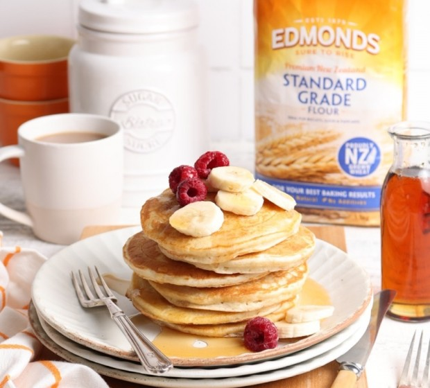

Edmonds Pancakes

These are the American style hotcakes traditionally served with maple syrup and banana but you could sneak in a bit of bacon for some extra sustenance!
Ingredients
- 2 cups Edmonds standard grade flour
- 2 tsp Edmonds baking powder
- ½ tsp salt
- 2 eggs
- ½ cup Chelsea white sugar
- 1 ½ cups Meadow Fresh milk, approximately
Steps
- Sift the flour, baking powder and salt into a bowl.
- In another bowl beat the eggs and sugar with a whisk until pale and thick.
- Add the egg mixture and the milk to the dry ingredients and mix until just combined.
- Gently heat a non-stick frying pan and drop large spoonfuls of the mixture from the point of the spoon onto the surface.
- When bubbles start to burst on the top of the pikelets, turn them over and cook the second side until golden. Place in a clean tea towel to keep warm until they are all ready to serve.